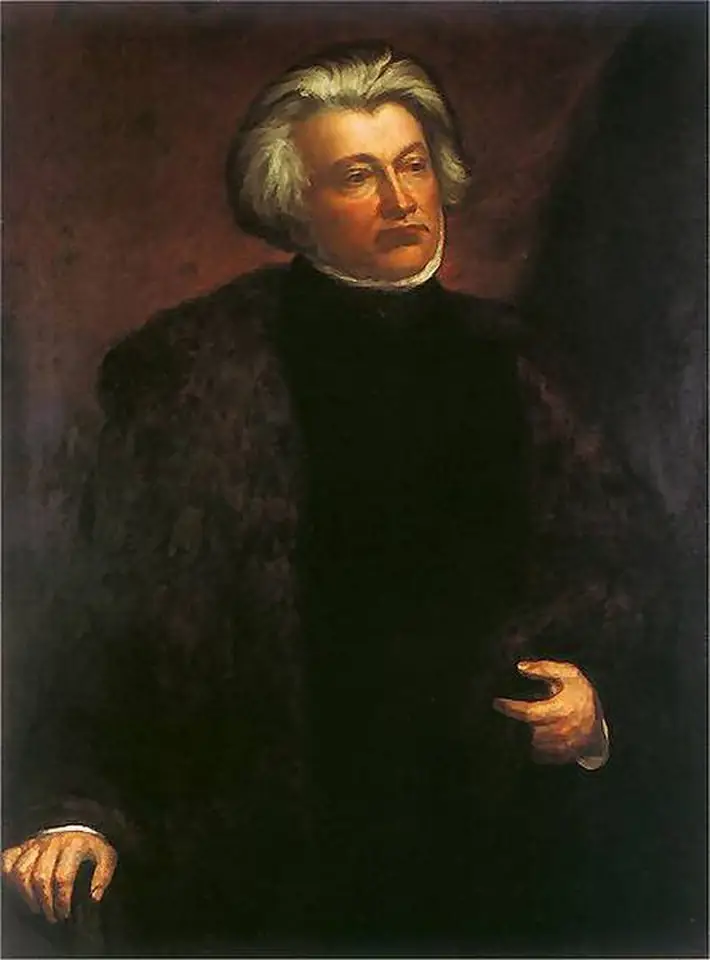

Wielka Emigracja i Mickiewicz
Muzeum Adama Mickiewicza
W tym miejscu 26 listopada 1855 r. zmarł Adam Mickiewicz – w krypcie domu-muzeum czekają marmurowa płyta, krzyż i kopia maski pośmiertnej poety.


- Dzielnica
- Beyoğlu
- Okres
- 1855 / 1955 / 1984
- Zwiedzanie
- Otwarte dla zwiedzających
Historia
Wieszcz, który dał Polsce „Pana Tadeusza”, przyjechał do Stambułu zaledwie dwa miesiące przed śmiercią – i umarł właśnie tutaj, na rogu uliczki Tatlı Badem, czyli Słodkich Migdałów.
Mickiewicz wyjechał z Paryża 11 września 1855 r., w środku wojny krymskiej. Oficjalnie jechał z misją naukową od rządu francuskiego, w rzeczywistości chciał pomóc w tworzeniu polskiego wojska u boku Turcji, walczącej z Rosją. 22 września był w Konstantynopolu, w październiku pojechał pod Burgas, do obozu kozaków sułtańskich dowodzonych przez Michała Czajkowskiego, czyli Sadyka Paszę. Tam wraz z sekretarzem Armandem Lévym obmyślał nawet legion żydowski. W listopadzie poeta, Lévy i przyjaciel Henryk Służalski wynajęli w Perze skromny drewniany dom. 26 listopada Mickiewicz zmarł. Otoczenie mówiło o cholerze, później pojawiły się podejrzenia otrucia; przyczyny śmierci nigdy nie ustalono.
Nazajutrz zdjęto maskę pośmiertną. Zabalsamowane ciało – według tradycji w piwnicy, gdzie dziś jest krypta – czekało do 30 grudnia na statek do Francji. Tego dnia, mimo deszczu i chłodu, trumnę odprowadzały setki ludzi: Polacy, inni Słowianie, Grecy i Lewantyńczycy. Poetę pochowano w Montmorency pod Paryżem, a w 1890 r. jego trumna spoczęła na Wawelu. W 1861 r. przyjechał tu najstarszy syn poety, Władysław; jak donosiła wtedy warszawska prasa, mieszkająca w domu rodzina muzułmańska pozwoliła mu obejrzeć wszystkie pokoje ostatniego mieszkania ojca.
Drewniany dom spłonął w wielkim pożarze Pery w 1870 r. Kilka lat później rodzina Ratyńskich postawiła na tej działce dom murowany – według stambulskich Polaków wierną kopię dawnego – z polsko-francuską tablicą „Na pamiątkę postawiony ten dom na tem miejscu, gdzie 26 listopada 1855 roku umarł Adam Mickiewicz”. Muzeum otwarto tu w 1955 r. Gdy w 1977 r. wygasła dzierżawa i dom mógł przejść w obce ręce, w 1979 r. kupił go rząd turecki; po remoncie, 4 października 1984 r., otwarto nową ekspozycję warszawskiego Muzeum Literatury.



Jak zwiedzać
Muzeum leży ok. 10 minut pieszo od placu Taksim, po drugiej stronie bulwaru Tarlabaşı. Jest oddziałem Muzeum Sztuki Tureckiej i Islamskiej (tureckie Ministerstwo Kultury i Turystyki); za ekspozycję odpowiada warszawskie Muzeum Literatury im. Adama Mickiewicza, wspierane przez Konsulat Generalny RP. Według oficjalnej strony wstęp był bezpłatny, a godziny otwarcia różnią się w źródłach – sprawdź jedno i drugie przed wizytą na turkishmuseums.com. Najpierw obejrzyj fasadę: nad wejściem wiszą tablice pamiątkowe, w tym tablica Ratyńskich. W środku, na czterech kondygnacjach, opowiedziano życie poety – jest też sala poświęcona obozowi pod Burgasem; na parterze można zabrać kartki z wierszami w wielu językach. Najważniejsza jest krypta w podziemiu: marmurowa płyta „Miejsce czasowego spoczynku Adama Mickiewicza”, krzyż, kopia maski pośmiertnej i ikona Matki Bożej Ostrobramskiej. Schody są strome i wąskie, budynek nie jest dostępny dla wózków.
Postaci
- Adam Mickiewicz
- Armand Lévy
- Henryk Służalski
- Władysław Mickiewicz
- Michał Czajkowski (Sadyk Pasza)
- Józef Ratyński
Położenie
Beyoğlu, Stambuł · Współrzędne: 41.03878, 28.97715
Spacery z tym miejscem
W pobliżu
Źródła
- bazhum.muzhp.pl/media/texts/muzealnictwo/1986-tom-30/muzealni…
- polonika.pl/polonik-tygodnia/muzeum-adama-mickiewicza-w-stamb…
- rcin.org.pl/Content/68779/WA248_83376_P-I-1269_fabianowski.pdf
- dzieje.pl/node/121642
- turkishmuseums.com/museum/detail/2065-istanbul-adam-mickiewic…
- en.wikipedia.org/wiki/Adam_Mickiewicz_Museum,_Istanbul
- gov.pl/web/turkiye/adam-mickiewicz-english